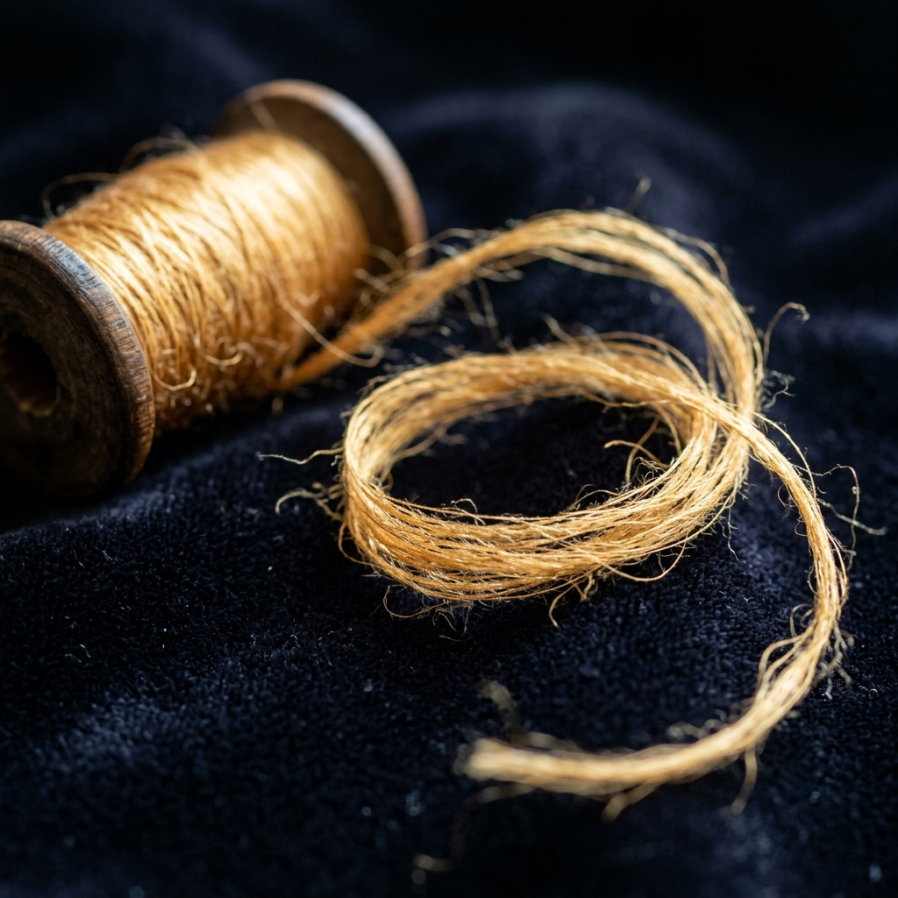
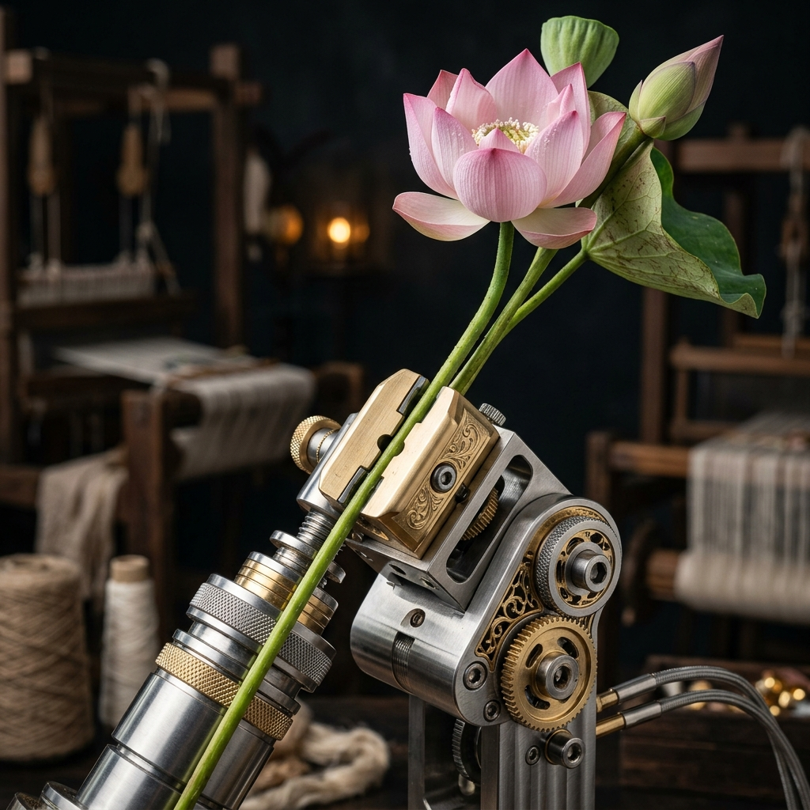
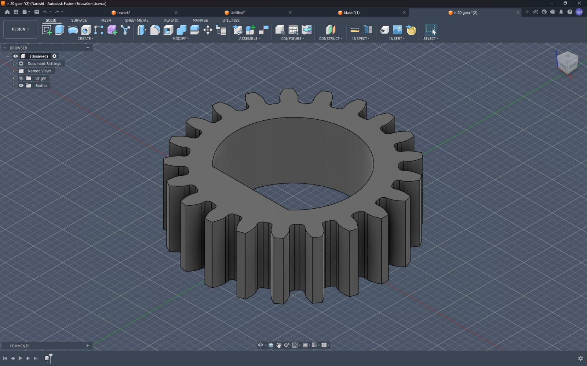
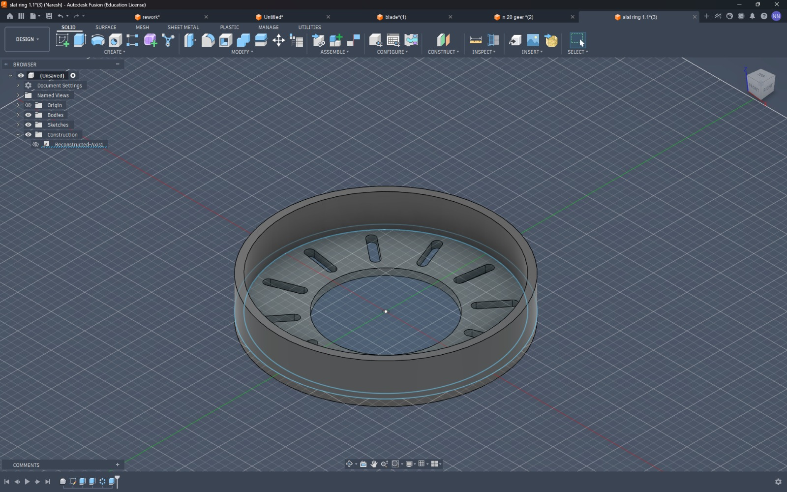
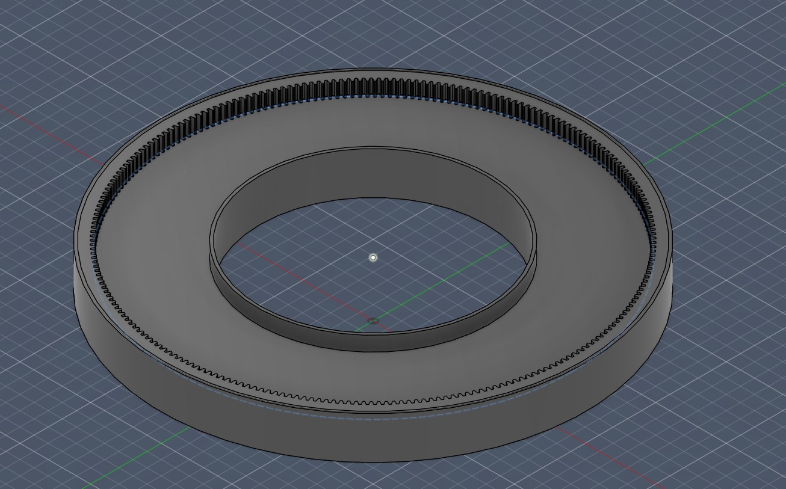

Weaving Nature's Rarest Silk.
The first fully-automated, high-precision spinning machine specifically engineered for delicate Lotus Silk fibers.
Discover the ProcessThe first fully-automated, high-precision spinning machine specifically engineered for delicate Lotus Silk fibers.
Discover the ProcessLotus silk is one of the rarest fabrics in the world, traditionally extracted by hand from the stems of lotus flowers. The micro-fibers are incredibly delicate, making conventional spinning machines unsuitable.
Our LotusSpin™ technology mimics the gentle pull of the human hand while providing the consistency, speed, and reliability of modern robotics. The result? Flawless, golden silk yarn with zero breakage.

Real-time tension monitoring adjusts the pulling force 100 times per second to prevent snapping of sensitive lotus fibers.
Enclosed spinning environment maintains optimal humidity levels for lotus stems, preventing premature drying.
AI-driven spindle rotation adapts to varying fiber thicknesses naturally found in lotus stems.

Carefully selecting the finest lotus stems from serene ponds.
Our machine precisely pulls micro-fibers without breaking their natural strength.
Delicate fibers are spun into luxurious, breathable lotus silk thread.
The Lotus Silk Yarn Spinning System is a custom-developed semi-automated process designed to extract, process, and spin fine fibers from lotus stems into eco-friendly silk yarn.
It aims to replace labor-intensive manual extraction with a more efficient, scalable, and consistent production method.



Team Head & CAD Modeling Lead
Documentation & Presentation Coordinator
Research & Technical Analysis
Testing & Quality Checking
Design Support & Project Coordination
Traditionally, lotus silk yarn production has been practiced in countries like Myanmar, Vietnam, and parts of India, where artisans manually extract fibers from stems by hand. Many researchers and innovators have explored manual extraction techniques, small-scale spinning setups, and synthetic or plant-based textile innovations.
Relying heavily on manual extraction (hand rolling) and DIY prototypes shared slowly across research journals and platforms like YouTube.
Experimental machines handle banana and bamboo fibers, but fully efficient and scalable spinning systems for lotus stems are still heavily limited.
This creates a massive opportunity for innovation in automation, consistent yarn quality, reduction in labor effort, and increased production rates.
Have questions about LotusSpin™ or ready to request a quote? Fill out the form or reach out to us directly using the details below.
Naresh N
+91 6379957701
nareshnatarjan84@gmail.com